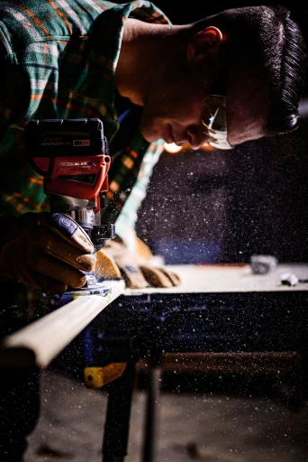
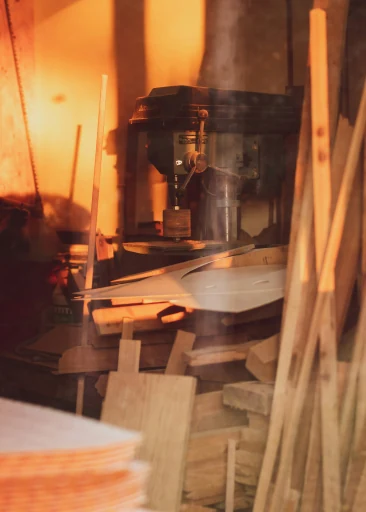
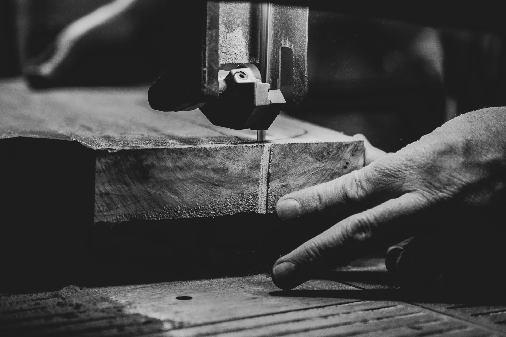
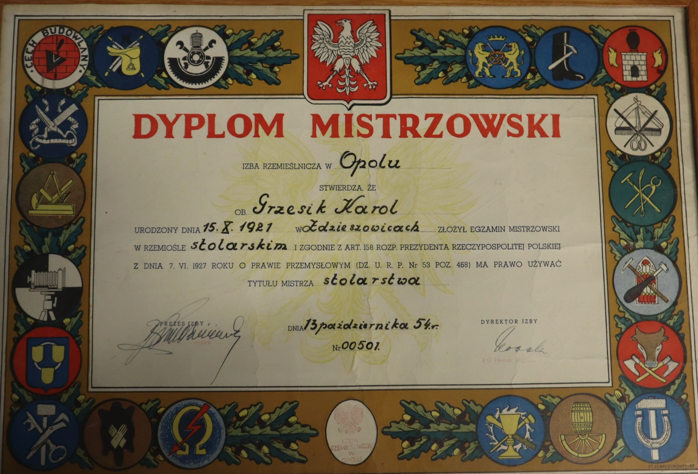
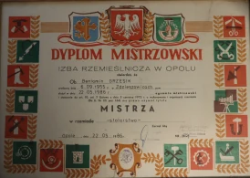

O nas

Nasza historia
Historia Stolarstwa Grzesik sięga początków lat 50-tych, kiedy to nasz dziadek Karol Grzesik, założył skromny warsztat stolarski. Był prawdziwym mistrzem swojego fachu.
Już w młodym wieku wykazał się ogromnym talentem przy pracy z drewnem i wyuczył się stolarstwa jako „czeladnik stolarstwa”. Kilka lat później uzyskał tytuł Mistrza, co świadczyło o jego wysokich umiejętnościach rzemieślniczych.
W roku 1952, dzięki swojemu zaangażowaniu i umiejętnościom, założył swój własny warsztat stolarski. Początkowo był to niewielki zakład, ale dzięki ciężkiej pracy i pasji awansował do nowoczesnej stolarni.
Później zakład objął jego syn Beniamin, którego celem było rozszerzenie usług i zmodernizowanie warsztatu przy zachowaniu tradycji i doświadczeniu jego ojca. Nasz warsztat zyskał uznanie nie tylko lokalnie, ale także międzynarodowo. Dzięki naszym umiejętnościom i zaawansowanym maszynom CNC, jesteśmy w stanie tworzyć nie tylko tradycyjne meble, schody i drzwi, ale również skomplikowane projekty.

Nasza oferta
Działamy na terenie województwa opolskiego, ale jesteśmy gotowi obsłużyć klientów z całej Polski oraz za granicą w przypadku większych zamówień.
W naszych szeregach zatrudniamy jedynie doświadczonych stolarzy, których pasja do drewna i rzemiosła przekłada się na jakość naszych produktów i usług. Nasza oferta skierowana jest zarówno do osób prywatnych, poszukujących niestandardowych rozwiązań stolarskich, jak i do firm, niezależnie od ich wielkości.
Nasze usługi obejmują pełen zakres działań, począwszy od precyzyjnych pomiarów, poprzez doradztwo w wyborze najlepszych rozwiązań, aż po produkcję, transport oraz profesjonalny montaż. Dzięki kompleksowemu podejściu do każdego projektu, jesteśmy w stanie zrealizować nawet najbardziej wymagające zamówienia, zapewniając naszym klientom satysfakcję i trwałe rozwiązania stolarskie.

Filozofia zakładu
Jesteśmy dumni z naszych osiągnięć i sukcesów, ale najważniejsze jest dla nas, że nadal kochamy to, co robimy. Czujemy ogromną radość, kiedy przywracamy do życia stolarkę kościelną z przeszłości, odnawiając kapliczki, krzyże i ołtarze.
Nasz warsztat jest otwarty na nowe wyzwania i zawsze stawiamy na jakość i precyzję. Cieszymy się z możliwości współpracy z innymi pasjonatami drewna i rzemiosła, a także z młodymi talentami, którzy chcą podążać naszymi śladami.
Naszą priorytetową wartością jest dbałość o środowisko, dlatego używamy wyłącznie certyfikowanego drewna oznaczonego certyfikatem FSC, co stanowi gwarancję zrównoważonego i ekologicznego podejścia do naszej działalności.


Dyplomy mistrzowskie
Nasza wiedza i kompetencje zostały sprawdzone przez Izbę Rzemieślniczą w Opolu.